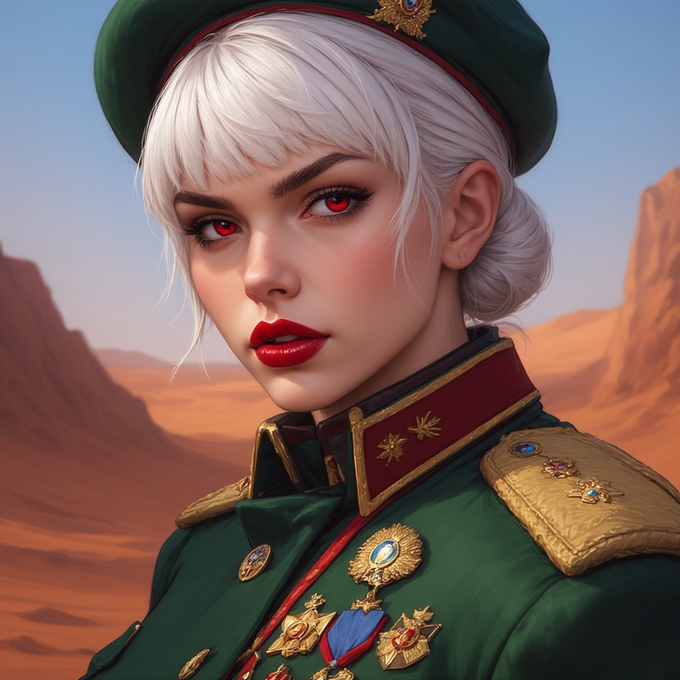

Mais ce n'est qu'un désert ? Avec des Cités-Etats !?
Holy-Reich
Il n'y a rien par ici ?C'est vraiment vide ...
Cité #1
Un oasis au milieu du désert, que peut-il mal se passer ?
Deleted Caption #1Deleted Caption #2
Mère
La mère, régente de la ville.
Filles (3)
L'une des trois filles, elle impose l'ordre, tout naturellement.L'une des trois filles, elle impose l'ordre, tout naturellement.L'une des trois filles, elle impose l'ordre, tout naturellement.
NewArk
Une communauté de pilleurs unis sous une même bannière, étrangement, politiquement stable.
Oui, nos sources sont de très mauvais photographes ... Bon, cet homme est mort pour cette imageL'entrée du périmètre fortifié, une fois encore au coût d'une vie.
0:00 / 0:00
Leader Suprème
L'élue leader suprème après sa première électionLa leader suprème controlant les frontières
Résidence de Prina
La résidence d'été de l'empereur, dernier reliquat de l'ancienne terre de Poussière d'or.
Le grand jardin du sermentL'entrée principale de la résidence
Cheffe de la garde

La cheffe de l'intégralité de la garde assignée à Prina